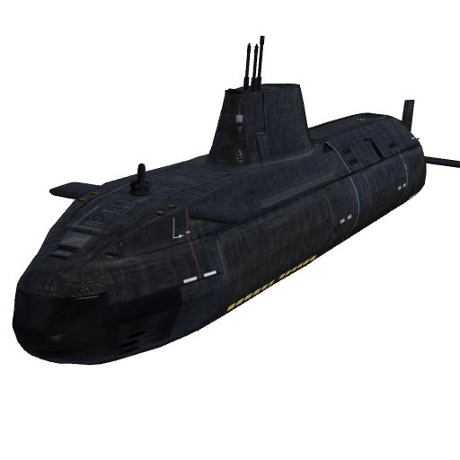
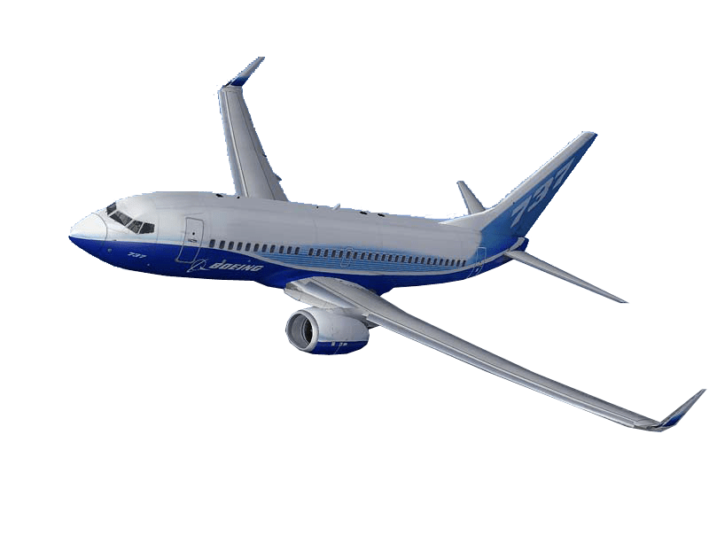

The Jbuez0-rent
Ofreceemos comodida y bienestra al momento de movilarte nuestrs principales medios de transporte son el camiónes, el avión y el barco, De los tres, el barco es el medio más utilizado debido a la evolución de las capacidades o la neseidad.



Donde estamos?
14 Ave 3-53 Jesucristo.
Horio de atencion?
8:00 am 14:00 pm
Dias de Atencion?
Lunes a viernes.